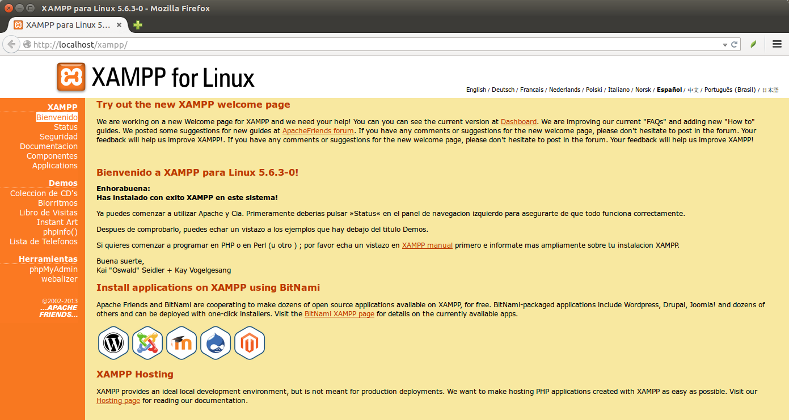

Accés a Dades
3.- Utilització de XAMPP
A banda del Manager executat en el punt anterior que pot servir per posar en marxa els servidors, podem accedir a tots els components de XAMPP des d'un navegador. Només hem d'entrar des d'un navegador a localhost. En les imatges es mostra per a una versió anterior, però en la versió actual és similar:

Segurament el que més ens interessarà serà entrar al phpMyAdmin per a poder administrar MariaDB.
Llicenciat sota la Llicència Creative Commons Reconeixement NoComercial CompartirIgual 2.5